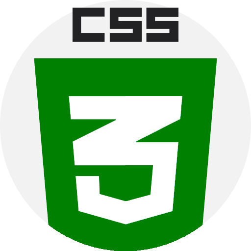
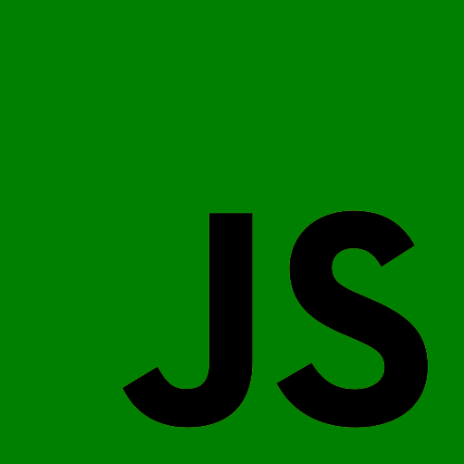

Средства web-разработки
CSS
Основные сведения о CSS
CSS - формальный язык описания внешнего вида документа, написанного с использованием языка разметки. Также может применяться к любым XML-документам, например, к SVG или XUL.
JavaScript
Основные сведения о JavaScript
JavaScript - мультипарадигменный язык программирования. Поддерживает объектно-ориентированный, императивный и функциональный стили. Является реализацией спецификации ECMAScript. JavaScript обычно используется как встраиваемый язык для программного доступа к объектам приложений.
Комментарии
На данной странице были рассмотрены следующие технологии:
- HTML
- CSS
- JavaScript
Также существуют другие технологии для разработки web-сервисов:
- React
- Angular
- Vue